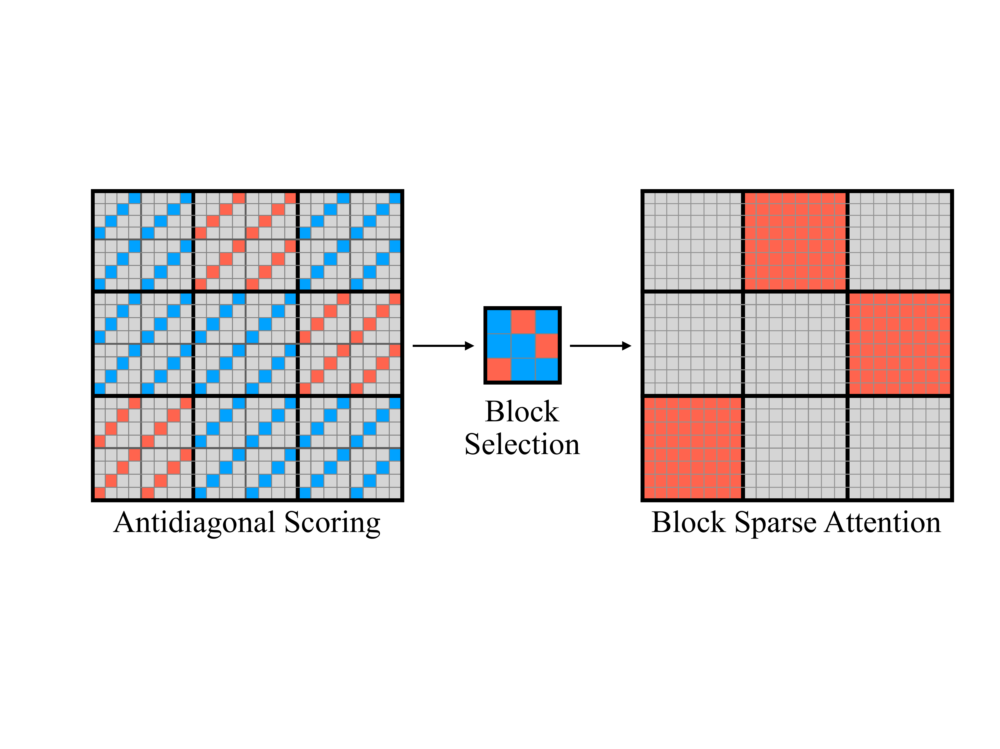
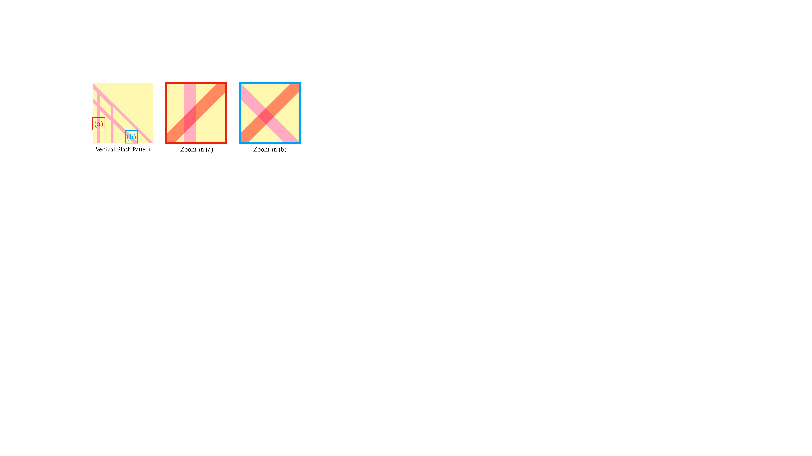
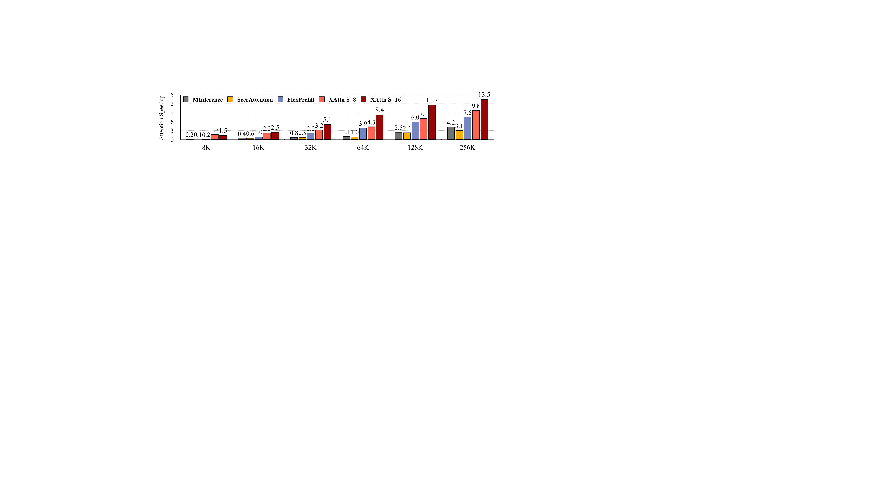
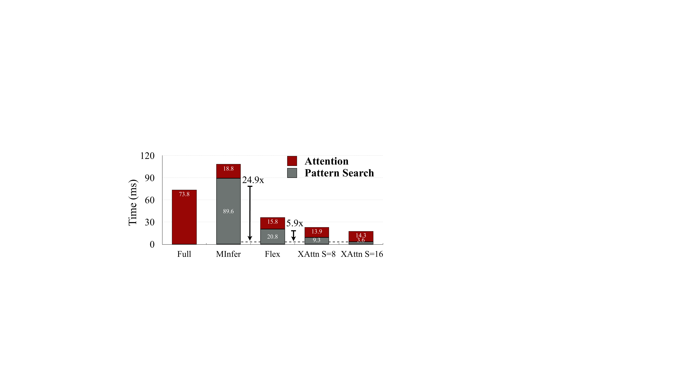

XAttention: Block Sparse Attention with Antidiagonal Scoring
论文 ID: 2503.16428
标题: XAttention: Block Sparse Attention with Antidiagonal Scoring
作者: Ruyi Xu (清华大学), Guangxuan Xiao (MIT), Haofeng Huang (清华大学), Junxian Guo (上海交通大学), Song Han (MIT, NVIDIA)
单位: MIT, 清华大学, 上海交通大学, NVIDIA
会议/期刊: ICML 2025
原文保存位置: ~/.openclaw/workspace/papers/20260309_XAttention/source/
报告生成日期: 2025-03-10
一、论文摘要
长上下文 Transformer 模型（LCTMs）对于现实世界的应用至关重要，但由于注意力机制具有二次复杂度，因而面临较高的计算成本。块稀疏注意力（Block-sparse attention）通过将计算聚焦在关键区域来缓解这一问题，但现有方法在平衡准确性和效率方面存在困难，因为块重要性评估的成本较高。
本文提出了 XAttention，这是一个即插即用的框架，利用稀疏注意力显著加速了 Transformer 模型的长上下文推理。XAttention 的关键创新在于：注意力矩阵中从左下角到右上角的反对角线值之和可以作为块重要性的有效代理。这使得能够精确识别和剪枝非关键块，从而实现高稀疏度并显著加速推理。
在具有挑战性的长上下文基准测试（包括自然语言的 RULER 和 LongBench、视频理解的 VideoMME 以及视频生成的 VBench）上，XAttention 实现了与全注意力相当的精度，同时提供了显著的算力收益。我们展示了在注意力计算中高达 13.5 倍 的加速。这些结果突出了 XAttention 释放块稀疏注意力实用潜力的能力，为在现实应用中可扩展且高效地部署 LCTMs 铺平了道路。
二、论文主体分析
1. 引言
大型语言模型（LLMs）的影响正在超越自然语言处理领域，引领多模态能力的新时代。长上下文 Transformer 模型（LCTMs）正在成为这一演进中的重要工具，特别适用于视频理解（VideoLLava、Qwen2-VL）和视频生成（HunyuanVideo）等需要处理和生成极长序列信息的任务。这些模型是解锁能够以类似人类方式与世界交互的系统——不仅理解和生成文本，还能在较长时间内理解和处理视觉信息——的关键。
然而，实现这一愿景需要克服一个重大挑战：注意力机制的计算负担。虽然注意力对于捕捉序列内关系至关重要，但其成本随序列长度呈二次方增长。这种二次方缩放在预填充（pre-filling）阶段造成了严重的瓶颈，阻碍了 LCTMs 在复杂现实应用中的实际部署。
在追求更高效 Transformer 的过程中，块稀疏注意力已成为一个有前景的方向。其核心思想颇具吸引力：不计算所有 token 对之间的注意力，而是将资源集中于注意力图中最关键的区域，创建相关信息的“块”。这种选择性计算有望在保持模型捕捉关键长距离依赖能力的同时大幅降低计算成本。
现有的块稀疏方法一直难以充分发挥其潜力，往往在准确性和效率之间权衡。这源于缺乏轻量且有效的机制来识别和优先处理真正重要的注意力块。确定块重要性的开销可能会抵消通过稀疏性获得的收益，使这些方法在实际部署中不切实际。
这引出了一个问题：我们能否设计一种显著加速长上下文 Transformer 而不牺牲精度的块稀疏注意力机制，真正释放其在实际应用中的潜力？

图 1：XAttention 原理图。XAttention 通过三步过程优化注意力：（左）步长反对角线评分：每个块（本例中为 8×8）通过沿其步长反对角线求和来评分（步长 = 4），红线通常表示较高的求和值，蓝线表示较低的值。（中）块选择：根据这些评估选择高分块。（右）块稀疏注意力：仅对选定的块计算注意力（右侧红色块），实现显著的算力节省。此示例使用序列长度为 24。
:::
2. 方法
本节介绍我们的方法 XAttention。XAttention 算法包括三个主要组成部分：（1）注意力图块的重要性预测；（2）重要注意力块的选择；（3）注意力头最小阈值的预测。

图 2：XAttention 的反对角线模式与垂直/斜线模式的对比。XAttention 的反对角线模式与块内的垂直和斜线模式都相交，能够高效检测这些模式并指导有效的稀疏注意力计算。
:::
2.1 重要性预测
注意力图的固有稀疏性需要一种稳健的策略来预测注意力块的重要性。虽然 MInference 和 FlexPrefill 等方法结合了池化和“垂直斜线检测”，但我们的消融研究表明，仅依赖平均池化或求和池化会产生不准确的预测。当块内仅存在少量重要的垂直或斜线模式时，池化方法尤其无效，无法捕捉这些关键的重要性指标。
MInference 和 FlexPrefill 试图通过分析输入查询的最后一段来克服这一限制，识别重要的“垂直和斜线索引”。然而，这种方法面临两个关键挑战：首先，重要的注意力模式可能不会持续出现在最后的查询段中；其次，搜索算法本身引入了大量计算开销。
从根本上说，一种有效的块重要性预测方法应该自动且稳健地识别重要模式，包括关键的垂直和斜线模式。为此，我们提出了反对角线选择方法。在每个大小为 $B$ 的块中，我们使用步长 $S$ 沿反对角线选择元素（如图 1 所示）。这些选定元素的总和作为相应注意力块整体重要性的代理。
从两个角度可以理解这种方法的有效性：（1）信息保留：这种选择策略确保考虑所有 token 的信息，因为每个 token 至少对一个反对角线求和有贡献。（2）模式检测：如图 2 所示，反对角线与块内每种可能的垂直和斜线模式相交。XAttention 的反对角线模式与块内的垂直和斜线模式都相交，能够高效检测这些模式并指导有效的稀疏注意力计算。这确保了在重要性估计过程中不会遗漏任何关键模式。
2.2 阈值块选择
基于反对角线评分模式，我们提出以下稀疏注意力块选择算法。设 $S$ 表示步长，$B$ 是稀疏注意力块的大小。过程从反对角线求和开始，在注意力图的每个 $S \times S$ 块中沿反对角线选择元素，并计算每个反对角线的元素之和。随后，我们通过对这些反对角线求和应用 softmax 函数进行softmax 归一化，得到反对角线上的概率分布。最后，对于块选择，使用 find_blocks 函数识别累积反对角线概率超过预定义阈值 $\tau$ 的最小块集合。形式上，这可以表示为：
其中 $A$ 是注意力图，$\mathcal{B}$ 是一个块集合，$|\mathcal{B}|$ 表示集合中块的数量。这个过程基于反对角线评分模式和指定阈值有效地确定注意力图中最重要的块。
\begin{algorithm}[H]
\caption{块选择}
\label{alg:block_selection}
\begin{algorithmic}[1]
\REQUIRE 查询矩阵 $Q \in \mathbb{R}^{L \times d}$，键矩阵 $K \in \mathbb{R}^{L \times d}$，块大小 $B$，步长 $S$，头维度 $d_h$，阈值 $\tau$
\ENSURE 稀疏掩码 $M$
\STATE $N_B \gets \lfloor L / B \rfloor$ \COMMENT{块数量}
\FOR{$b = 0$ 到 $N_B - 1$}
\STATE $Q_{\text{slice}} \gets Q[bB : (b+1)B, :]$ \COMMENT{提取 $Q$ 块}
\STATE $Q_{\text{reshaped}} \gets []$
\FOR{$i = S-1$ 向下到 $0$}
\STATE $Q_{\text{reshaped}}.{\text{append}}(Q_{\text{slice}}[i::S, :])$ \COMMENT{沿反对角线重塑，步长 $S$}
\ENDFOR
\STATE $K_{\text{reshaped}} \gets []$
\FOR{$i = 0$ 到 $S-1$}
\STATE $K_{\text{reshaped}}.{\text{append}}(K[i::S, :])$ \COMMENT{沿反对角线重塑，步长 $S$}
\ENDFOR
\STATE $A_{\text{approx}} \gets \text{Softmax}\left( \frac{Q_{\text{reshaped}} K_{\text{reshaped}}^T}{\sqrt{d_h} \cdot S} \right)$ \COMMENT{近似注意力分数}
\STATE $M_b \gets \text{find\_blocks}(A_{\text{approx}}, \tau)$ \COMMENT{根据阈值找块}
\ENDFOR
\STATE $M \gets \text{concatenate}(M_0, M_1, \dots, M_{N_B-1})$ \COMMENT{连接块掩码}
\end{algorithmic}
\end{algorithm}
2.3 最小阈值预测
我们提出了一种动态规划方法来确定每个注意力头的最优阈值。先前的研究表明，不同的注意力头表现出不同的稀疏度和重要性。因此，为单个头动态调整阈值以优化准确性和计算效率之间的平衡是有益的。
问题形式化：考虑一个具有 $H$ 个注意力头的模型。我们定义一个动态规划表 $D[h][m]$，其中 $h \in \{1, 2, \dots, H\}$ 表示第 $h$ 个头，$m \in \{1, 2, \dots, M\}$ 表示进行阈值调整的次数。$D[h][m]$ 存储在前 $h$ 个头上恰好进行 $m$ 次阈值调整时可达到的最佳性能。
动态规划：我们的目标是找到每个头的最优阈值，使得它们的联合贡献在最小化计算的同时最大化准确性。DP 表的递推关系为：
$$ D[h][m] = \max(D[h-1][m], P(h, m)) $$其中 $P(h, m)$ 是第 $h$ 个头进行第 $m$ 次阈值调整时的性能，对应于在优化过程中将第 $h$ 个头的阈值相对于状态 $D[h-1][m-1]$ 降低一步后模型的性能。
我们通过在每一步将每个头的阈值降低 10% 来调整阈值：
$$ t_h(m) = t_h(m-1) \times 0.9 $$这确保了在保持每个头对准确性贡献的同时逐步减少计算。
值得注意的是，这种动态阈值预测方法可以进一步优化 XAttention 的稀疏度，但它不是 XAttention 的必要组成部分。
3. 实验
本节介绍我们对 XAttention 有效性的实证研究。首先详细介绍实现细节，然后在文本和视频理解以及视频生成基准测试上与强基准进行比较。然后测试 XAttention 的加速性能。最后，提供分析性消融研究以进一步了解 XAttention 的行为。
3.1 实验设置
模型：我们在三个不同领域评估 XAttention。对于自然语言任务，我们使用 Llama-3.1-8B-Instruct。在视频理解领域，我们使用 Qwen2-VL-7B-Instruct。最后，对于视频生成，我们使用 HunyuanVideo 模型。为了在自然语言任务上优化计算效率和准确性之间的权衡，我们将精确阈值预测方法应用于 Llama-3.1-8B-Instruct 模型。
基准：我们将 XAttention 与几个强基准进行比较。我们的密集注意力主要基准是 FlashAttention，在 FlashInfer 框架中实现。我们还与 MInference、FlexPrefill 和 SeerAttention 进行比较，严格遵循它们的公开实现。对于 SeerAttention，我们加入了 Gare 权重的预训练。对于 MInference，我们使用其官方配置，其中所有注意力头采用“Vertical-Slash”稀疏模式。对于 FlexPrefill，我们将超参数设置为 $\gamma = 0.95$ 和 $\tau = 0.1$，根据原始论文，这在提供的参数集中产生了最高的准确性。
数据集：我们在涵盖自然语言理解、视频理解和视频生成的多样化任务集上评估模型。对于自然语言任务，我们使用 RULER 数据集，这是一个专门设计用于评估 LLMs 长上下文能力的综合基准测试。RULER 允许自定义序列长度和任务复杂度，扩展了传统的“大海捞针”测试，同时引入了多跳追踪和聚合等新任务类别。我们还评估了来自 LongBench 的真实世界长上下文任务，以测试在实际场景中的性能。
对于视频理解，我们使用 Video-MME 数据集，这是评估多模态大语言模型（MLLMs）视频分析能力的首个综合基准。Video-MME 包含 900 个视频，总时长 254 小时，时长从 11 秒到 1 小时不等，为长视频理解提供了强大的测试平台。
在视频生成领域，我们利用 VBench 的 946 个 GPT 增强文本提示来生成视频。然后我们将 XAttention 生成的视频与全注意力基准生成的视频进行比较，评估我们方法的有效性。
表 1 比较了不同方法在 Llama-3.1-8B-Instruct 上 RULER 的准确性。
表 1：RULER 准确性比较
| 输入长度 | 4k | 8k | 16k | 32k | 64k | 128k | 平均 |
|---|---|---|---|---|---|---|---|
| Full | 96.74 | 94.03 | 92.02 | 84.17 | 81.32 | 76.89 | 87.52 |
| FlexPrefill | 95.99 | 93.67 | 92.73 | 88.14 | 81.14 | 74.67 | 87.72 |
| MInference | 96.54 | 94.06 | 91.37 | 85.79 | 83.03 | 54.12 | 84.15 |
| SeerAttn | 84.43 | 79.55 | 79.80 | 72.95 | 64.79 | 51.61 | 72.18 |
| Xattn S=8 | 96.83 | 94.07 | 93.17 | 90.75 | 84.08 | 72.31 | 88.47 |
| Xattn S=16 | 96.11 | 93.95 | 93.56 | 90.64 | 83.12 | 71.11 | 88.08 |
表 2 展示了 LongBench 上的性能比较。
表 2：LongBench 任务性能比较
XAttention (S=8 + 精确预测阈值) 在所有任务上实现了最高平均分，展示了其在实际场景中的有效性。
表 3：Video-MME 视频理解任务比较
XAttention 在所有稀疏注意力方法中取得了最佳平均分，甚至在全视频（1fps，长达1小时）上超越了 FlashAttention。
3.2 准确性结果
RULER：在 RULER 基准上，我们应用第 3.3 节描述的动态规划方法进行最小阈值预测，步长 $S=8$ 和 $S=16$，最大调整数 $M = 1000$。这产生了一组平均值为 0.8 的最小阈值，进一步提高了我们稀疏注意力机制的计算效率。
表 1 比较了 XAttention 与 Llama-3.1-8B-Instruct 模型在 RULER 上各种序列长度的准确性基准。值得注意的是，MInference 和 SeerAttention 都随着上下文长度增加而经历显著的性能下降。相比之下，XAttention 配置 $S=8$ 和 $S=16$ 并采用我们精确预测的最小阈值，不仅超越了最优稀疏注意力基准 FlexPrefill，而且在多个序列长度上超越了全注意力。这展示了 XAttention 处理非常长上下文的稳健性。
LongBench：表 2 展示了在 Llama-3.1-8B-Instruct 模型上，使用 LongBench 基准的真实世界任务中 XAttention 与强基准的性能比较。我们使用与 RULER 评估相同的配置评估 XAttention 以及 MInference 和 FlexPrefill。XAttention 在所有任务上实现了最高平均分，展示了其在实际场景中的有效性。值得注意的是，XAttention 在各个任务上的性能仍接近全注意力，表明我们的方法在提高效率的同时保持了准确性。
视频理解：我们在 QwenVL-2-7B 模型上应用步长 $S=16$ 和阈值 $\tau=0.9$ 参数。如表 3 所示，在三种稀疏注意力方法中，MInference 和 FlexPrefill 在长视频任务上未能达到最佳性能。XAttention 在所有稀疏注意力方法中取得了最佳平均分，甚至在全视频上超越了 FlashAttention。
视频生成：我们在 VBench 提示上使用 HunyuanVideo 模型评估 XAttention 在视频生成领域的性能。HunyuanVideo 模型使用 Diffusion Transformer (DiT) 架构，采用非因果注意力。由于现有基准未针对非因果注意力实现，我们仅将 XAttention 与全注意力基准进行比较。我们的评估考虑定量指标（PSNR、SSIM、LPIPS）和定性视觉比较。我们将 DiT 主干中的所有注意力计算替换为 XAttention，并使用相同的随机种子和提示测量相对于全注意力输出的性能，在所有 946 个 VBench 提示上取平均值。生成的视频分辨率为 720×1280 像素和 129 帧，50 个去噪步骤。我们将 XAttention 配置为步长 $S=8$ 和阈值 $\tau = 0.9$ 和 $\tau = 0.95$。
表 4 展示了将 XAttention 应用于 HunyuanVideo 模型的定量结果。
表 4：视频生成定量结果
| 配置 | PSNR | SSIM | LPIPS |
|---|---|---|---|
| Full Attention | - | - | - |
| Xattn τ=0.90 | 23.5 | 0.822 | 0.155 |
| Xattn τ=0.95 | 最高 | 最高 | 最低 |

图 3：视频生成定性比较。展示了使用 VBench 第一个提示生成的视频帧比较：（1）全注意力（基准），（2）无预热 XAttention (τ=0.95)，（3）5步预热 XAttention (τ=0.9)，（4）5步预热 XAttention (τ=0.95)。带预热的 XAttention 实现了与全注意力基准高度相似的视觉保真度。
:::
最初，从头开始在 HunyuanVideo 模型中应用 XAttention 导致输出视频与全注意力基准相比有轻微的布局偏移，定量分数较低。灵感来自扩散模型的研究表明早期去噪步骤对确定内容布局至关重要，我们引入了“预热”阶段。在前 5 个去噪步骤中利用全注意力，然后切换到 XAttention。
两种配置（$\tau = 0.90$ 和 $\tau = 0.95$）都实现了与全注意力生成视频高度相似的保真度。具体来说，我们观察到 PSNR 高达 23.5，SSIM 高达 0.822，LPIPS 低至 0.155，表明人眼难以辨别的相似度水平。如预期的那样，存在权衡：更高的阈值 $\tau$ 产生更好的结果但稀疏度略低。然而，两种配置都实现了超过 50% 的稀疏度。
3.3 效率结果
我们进一步分析了 XAttention 在不同上下文长度任务上的效率，将其与 FlashAttention、MInference 和 FlexPrefill 进行比较。我们专注于预填充阶段，并测量 XAttention 实现的注意力加速。我们还将计算时间分解为模式选择和稀疏注意力组件，与其他无需训练的模式选择方法进行对比。
注意力加速：图 4 展示了在 8k 到 256k 范围内的 token 序列长度上 XAttention 的预填充加速。我们使用步长 $S=16$ 和 $S=8$ 以及阈值 $\tau=0.9$ 进行这些实验。在较短的上下文中，注意力密度往往更高，MInference 和 FlexPrefill 由于更广泛的模式选择而产生更多开销。相比之下，XAttention 保持其加速优势。值得注意的是，对于 256k 上下文长度，XAttention 实现了最大 13.5 倍 的预填充注意力加速（分别见下表）。
表 5：不同上下文长度的密度
| 序列长度 | 步长 4 | 步长 8 | 步长 16 |
|---|---|---|---|
| 4k | 51.73% | 52.16% | 55.38% |
| 8k | 40.96% | 43.77% | 43.55% |
| 16k | 27.43% | 27.49% | 28.91% |
| 32k | 21.09% | 20.97% | 27.93% |
| 64k | 9.43% | 10.98% | 11.32% |
| 128k | 6.20% | 6.89% | 7.32% |

图 4：不同上下文长度下注意力方法的加速比较，相对于 FlashInfer 的 FlashAttention 实现。XAttention 持续优于其他稀疏注意力方法，在 256K token 时达到 13.5 倍加速。
:::
注意力时间分解：图 5 展示了 XAttention 的反对角线模式及其高效块选择算法导致模式选择速度明显快于依赖垂直斜线索引搜索的 MInference 和 FlexPrefill。具体来说，XAttention 的模式选择时间分别快了最多 24.9 倍和 5.9 倍。此外，反对角线模式的准确性使 XAttention 能够实现更低的注意力密度，从而在稀疏注意力计算本身中实现显著的加速。

图 5：预填充注意力时间分解。XAttention 显著减少了模式选择时间，同时保持密度，实现了与现有方法相比的显著加速。
:::
3.4 消融研究
为了进一步分析 XAttention 的组成部分，我们进行了消融研究，评估反对角线模式、阈值块选择和最小阈值预测的有效性。
反对角线模式：我们通过将反对角线模式与随机和对角线模式进行比较来研究其重要性。对于随机模式，我们确保在每个 $S \times S$ 块内选择 $S$ 个元素，保持每行和每列至少选择一个 token。消融实验表明，反对角线模式在保持最低密度的同时实现了最高准确性，确认其优越性。
表 6：不同模式的比较
| 模式 | 步长 8 (Avg) | 步长 8 (密度) | 步长 16 (Avg) | 步长 16 (密度) |
|---|---|---|---|---|
| 随机 | 82.48 | 27.57% | 80.94 | 31.36% |
| 对角线 | 81.06 | 24.47% | 79.63 | 25.31% |
| 反对角线 | 88.47 | 20.97% | 88.08 | 27.93% |
步长大小：我们探索不同步长大小 $S$ 的影响。更大的步长导致更稀疏的采样注意力图，因此计算开销更低。然而，过大的步长可能会损害块选择的准确性。我们比较了步长 4、16 和 64。结果表明，当步长过长时，它无法准确检测之前识别的斜线注意力模式。过于稀疏的反对角线无法有效区分从不同位置进入块的斜线模式，导致性能下降。
表 7：不同步长的比较
| 步长 | 平均 | 密度 |
|---|---|---|
| S=4 | 88.89 | 21.09% |
| S=8 | 88.47 | 20.97% |
| S=16 | 88.08 | 27.93% |
| S=64 | 81.21 | 39.88% |
Top-K vs Top-Ratio vs 动态稀疏度：我们评估不同的块选择策略：Top-K、Top-Ratio 和我们的阈值块选择（动态稀疏度）。为了公平比较，我们设置 $K=8192$ 和 $\text{Ratio}=27\%$ 用于 $S=8$，$K=16384$ 和 $\text{Ratio}=31\%$ 用于 $S=16$，针对与我们阈值块选择相似的计算成本。
表 8：不同选择算法的比较
| 策略 | S=4 (Avg) | S=4 (密度) | S=8 (Avg) | S=8 (密度) | S=16 (Avg) | S=16 (密度) |
|---|---|---|---|---|---|---|
| Top K | 84.96 | 17.40% | 84.13 | 19.92% | 83.11 | 30.15% |
| Ratio | 85.96 | 21.00% | 85.42 | 21.00% | 84.24 | 27.00% |
| 阈值 | 88.89 | 21.09% | 88.47 | 20.97% | 88.08 | 27.93% |
表 8 表明 Top-K 和 Top-Ratio 都难以用相似计算处理不同和动态的输入序列长度。相比之下，我们基于阈值的方法（保留至少阈值级别注意力的块）在计算和准确性之间取得了最佳平衡。
最小阈值预测：最后，我们将最小阈值预测方法的性能与固定阈值 $\tau = 0.9$ 在 RULER 基准上进行比较。使用最小阈值预测，我们从 $\tau = 0.9$ 开始，设置 $M = 1000$，允许动态规划 (DP) 算法探索 1000 种最优阈值组合。这产生了一组更精细的阈值，平均值为 0.8。消融实验表明，动态预测的阈值实现了更低的密度和更好的准确性，展示了这种方法的有效性。
4. 相关工作
4.1 长上下文大语言模型
工程和算法的进步延长了大型语言模型的上下文长度能力。两种主要方法是：（1）编译长文本大数据集进行持续预训练或微调，以及（2）利用外部内存或检索增强技术来增强长距离上下文处理。这些进步使 LLMs 能够处理越来越复杂的任务，这些任务需要在扩展序列上进行推理。
4.2 稀疏注意力
LLMs 核心的注意力机制表现出固有的稀疏性，意味着许多注意力权重可以忽略而不会导致显著的性能下降。这种稀疏性随着上下文长度增加而变得更加明显，为优化推理速度提供了机会。然而，这种稀疏性的动态性和输入依赖性——在不同输入、注意力头甚至层之间变化——对有效利用提出了重大挑战。
Sparse Transformer、LongFormer、BigBird 和 Selective Attention 等方法通过局部或基于块的注意力降低复杂度，但通常需要重新训练，限制了其实际应用性。H2O 和 TOVA 根据查询模式丢弃 token。StreamingLLM 保留初始和最近的 token 以实现一致的延迟和内存使用，能够处理比预训练长度更长的序列。
为了加速预填充阶段，最近的方法采用了稀疏注意力模式。MInference 和 FlexPrefill 都利用模式选择算法在预填充期间实现显著加速。然而，这些选择算法的开销仍然是一个瓶颈。SeerAttention 通过预训练和微调门控参数实现高稀疏度，在保持低困惑度的同时提高效率。然而，它需要昂贵的训练过程，并且在下游任务上表现有限。因此，需要一种开销最小的选择算法的无训练方法来应对日益增长的预填充时间。
4.3 LLM 推理加速
许多技术已被开发用于加速 LLM 推理。系统级解决方案专注于优化原始注意力计算以更好地利用硬件特性。 notable examples include FlashAttention，优化内存访问模式以实现更快的注意力计算，以及 RingAttention，跨多个设备分发注意力计算。其他系统级方法包括 FlashDecoding 和 PagedAttention，分别专注于优化计算过程和 KV 缓存管理。模型压缩技术，如量化，也被广泛用于减小模型大小和内存占用，从而实现更快的推理。
4.4 最近的工作
最近有几项杰出的工作专注于推进稀疏注意力。Sparse VideoGen 通过利用空间和时间头加速视频生成，同时保持生成质量。NSA 引入了一种用于高效长上下文建模的原生可训练稀疏注意力机制。MoBA 通过采用专家混合方法解决了传统注意力机制的二次复杂度问题。Fast Video Generation 通过滑动瓦片注意力减少计算需求。我们的工作与这些努力一致，通过降低计算成本实现 AI 的民主化，并实现高效部署。
5. 结论
我们提出了 XAttention，这是一个用于加速 Transformer 模型中长上下文推理的即插即用新框架。通过利用注意力矩阵中反对角线求和作为块重要性的稳健代理，XAttention 能够有效地识别和剪枝非关键块，在不牺牲准确性的情况下实现显著的算力节省。
我们在具有挑战性的长上下文基准测试上对 XAttention 进行了评估，这些基准测试涵盖自然语言理解（RULER、LongBench）、视频理解（VideoMME）和视频生成（VBench），结果表明 XAttention 在保持与全注意力相当性能的同时，实现了高达 13.5 倍的注意力计算加速。这些结果突出了 XAttention 释放块稀疏注意力实用潜力的能力，为在要求苛刻的应用中高效且可扩展地部署长上下文 Transformer 模型铺平了道路。
三、论文简评
创新点
反对角线评分机制：论文提出了一个创新性的观点——使用注意力矩阵的反对角线元素之和作为块重要性的代理指标，这是一个轻量且有效的评估方法，相比现有方法（如 MInference 和 FlexPrefill）显著降低了计算开销。
无需训练的即插即用框架：XAttention 可以直接应用于现有模型，无需额外训练或微调，具有良好的实用性和兼容性。
全面的评估：论文在多个领域（自然语言、视频理解、视频生成）和多个基准测试（RULER、LongBench、VideoMME、VBench）上进行了广泛评估，证明了方法的通用性和有效性。
显著的性能提升：在 256K 序列长度下实现了 13.5 倍的注意力加速，同时保持与全注意力相当的准确性。
局限性
动态阈值预测的计算开销：虽然最小阈值预测可以进一步优化稀疏度，但其动态规划过程需要额外的计算资源，可能不适用于所有场景。
对特定模式的依赖：方法的有效性依赖于注意力图中存在可检测的垂直和斜线模式，对于完全分散的注意力模式可能效果有限。
视频生成的预热策略：视频生成需要额外的 5 步全注意力预热，增加了使用复杂性。
应用场景
- 长上下文大语言模型的推理加速
- 视频理解任务（如 VideoMME 基准测试）
- 视频生成任务（如 VBench 基准测试）
- 多模态 AI 应用
可改进方向
- 结合更复杂的模式检测方法，进一步提升准确性
- 探索与其他推理优化技术（如量化、剪枝）的联合优化
- 针对不同模型架构和任务类型进行自适应配置
- 研究更高效的阈值预测方法以降低开销